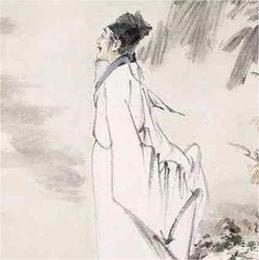

译文：
年轻时哪里知道世事如此艰难，北望中原，收复故土的豪迈气概坚定如山。
记得曾在瓜洲渡痛击金兵，车船在雪夜里飞奔。秋风中骑着战马纵横驰骋， 收复了大散关，捷报频传。
当年曾以守城大将檀道济自我期许，到如今鬓发渐白，盼望收复故土的愿望已成空谈。
《出师表》真可谓名不虚传，有谁能像诸葛亮鞠躬尽瘁，率三军复汉室北定中原！
注释：
书愤：书写自己的愤恨之情。书：写。
早岁：早年，年轻时。那：即“哪”。世事艰：指抗金大业屡遭破坏。
“中原”句：北望中原，收复故土的豪迈气概坚定如山。中原北望，“北望中原”的倒文。气，气概。
楼船，指采石之战中宋军使用的车船，又名明轮船、车轮柯。车船内部安装有以踩踏驱动的机械连接船外的明轮，依靠一组人的脚力踩踏前行。车船在宋代盛极一时。因这种战船高大如楼，故把它称之为楼船。瓜洲：在今江苏邗江南长江边，与镇江隔江相对，是当时的江防要地。
铁马：披着铁甲的战马。
大散关：在今陕西宝鸡西南，是当时宋金的西部边界。
塞上长城，比喻能守边的将领。《南史·檀道济传》载，宋文帝要杀大将檀道济，檀临刑前怒叱道：“乃坏汝万里长城！”
衰鬓：年老而疏白的头发。斑：指黑发中夹杂了白发。
出师一表：蜀汉后主建兴五年（227）三月，诸葛亮出兵伐魏前曾写了一篇《出师表》，表达了自己“奖率三军，北定中原”，“兴复汉室，还于旧都”的坚强决心。
名世：名传后世。
堪：能够。
伯仲：原指兄弟间的次第。这里比喻人物不相上下，难分优劣高低。
赏析：
全诗紧扣住一“愤”字，可分为两部分。前四句概括了自己青壮年时期的豪情壮志和战斗生活情景，其中颔联撷取了两个最能体现“气如山”的画面来表现，不用一个动词，却境界全出，饱含着浓厚的边地气氛和高昂的战斗情绪。后四句抒发壮心未遂、时光虚掷、功业难成的悲愤之气，但悲愤而不感伤颓废。尾联以诸葛亮自比，不满和悲叹之情交织在一起，展现了诗人复杂的内心世界。这首诗意境开阔，感情沉郁，气韵浑厚。
“早岁那知世事艰，中原北望气如山。”追叙自己早年的宏图大志和气壮如山的爱国热情。既有对世时艰难的慨叹，又有对自己当年抗金复国的壮心豪气的袒露。作者青年时就立下了“上马击狂胡，下马草军书”的宏愿。孝宗即位后，陆游曾向他陈述了有关定都、备战和革新政治的建议，使得朝廷主战气氛甚浓。隆兴二年春，陆游积极支持爱国将领张浚北伐，符离之役失利，朝中主和势力日炽，张浚被罢免，陆游也受牵连而免了官职。乾道八年，陆游抵达南郑，在四川宣抚使王炎幕下任干办公事兼检法官，八个多月的从军生涯是他一生中身临前线最宝贵的时光，他身穿戎装，斗志昂扬地驰骋在西北国防前线。他考察了南郑一带的山川形势和民情风俗，形成了他的“却用关中作本根”(《山南行》)的战略思想，积极向王炎陈“进取之策”，但南宋朝廷无法容忍他策划北伐的活动。最后王炎被朝廷召回，幕府也被撤散，陆游殷切收复中原的主张成为泡影，他的内心非常失望和苦闷但爱国热情并没有消减。
“楼船夜雪瓜洲渡，铁马秋风大散关。”二句，写作者在镇江前线时，雪夜遥望瓜洲渡口宋军高大战舰；在南郑前线上，乘秋风，跨铁马，奔驰在大散关道上。这是陆游亲历的两次难以忘怀的抵抗金兵战斗。“瓜洲渡”在江苏省扬州市南面的瓜洲镇，此事指宋孝宗隆兴二年，陆游任镇江通判，劝说支持张浚用兵，准备北伐事。“大散关”在今陕西宝鸡市西南，是当时宋金的边界，此事指宋孝宗乾道八年，陆游做王炎幕僚，曾筹划恢复中原大计，领军队强渡渭水，策马直驱大散关前线与金人作战。作者采用列锦手法，两句用六个名词简洁却巧妙地写出了战斗的情形和作者想抗金杀敌的心情。宋朝的军队曾经在东南瓜洲渡和西北的大散关打败过金兵，一处是在冬天， 一处在秋天! 一次是兵船作战，一次是马队交锋。作者在追述早年的快意征战生活，流露出抗金复国的豪情壮志。
“塞上长城空自许，镜中衰鬓已先斑。”岁月不居，壮岁已逝，志未酬而鬓先斑，这在赤心为国的诗人是日夜为之痛心疾首的。陆游不但是诗人，他还是以战略家自负的。可惜毕生未能一展长材。“切勿轻书生，上马能击贼”（《太息》）、“平生万里心，执戈王前驱”（《夜读兵书》）是他念念不忘的心愿。“塞上长城”句，诗人用刘宋名将檀道济典明志。以此自许，可见其少时之磅礴大气，捍卫国家，扬威边地，舍我其谁。然而，如今诗人壮志未酬的苦闷全悬于一个“空”字。大志落空，奋斗落空，一切落空，而揽镜自照，却是衰鬓先斑，皓首皤皤。两相比照，满是悲怆。这一结局，非诗人不尽志所致，非诗人不尽力所致，而是小人误人，世事磨人。作者有心而天不予。悲怆便为郁愤。
“出师一表真名世，千载谁堪伯仲间！”尾联亦用典明志。诸葛坚持北伐，虽“出师一表真名世”，但终归名满天宇，“千载谁堪伯仲间”。千载而下，无人可与相提并论。很明显，诗人用典意在贬斥那朝野上下主降的碌碌小人，表明自己恢复中原之志亦将“名世”。诗人在现实里找不到安慰，便只好将渴求慰藉的灵魂放到未来，这自然是无奈之举。而诗人一腔郁愤也就只好倾泄于这无奈了。 通过诸葛亮的典故，追慕先贤的业绩，表明自己的爱国热情至老不移，渴望效法诸葛亮，施展抱负。回看整首诗歌，可见句句是愤，字字是愤。以愤而为诗，诗便尽是愤。
全诗除了巧用典故，还巧作对比，一处是理想与现实作对比，本希望大家能同心同德抵抗金兵，但现实却是自己被排挤不能继续抗战，恢复中原愿望无法实现；二处是自己早年形象与晚年形象作对比，早年是“中原北望气如山”，而到了晚年却“镜中衰鬓已先斑”，表明自己想杀敌报国却屡次遭受排挤打击的悲愤；三处是用三国诸葛亮慷慨北伐同当今南宋朝廷妥协不抵抗作对比，以古鉴今，褒贬分明。全诗感情沉郁，气韵浑厚，显然得力于陆游。这些诗句皆出自他亲身的经历，饱含着他的政治生活感受，是那些逞才摛藻的作品所无法比拟的。